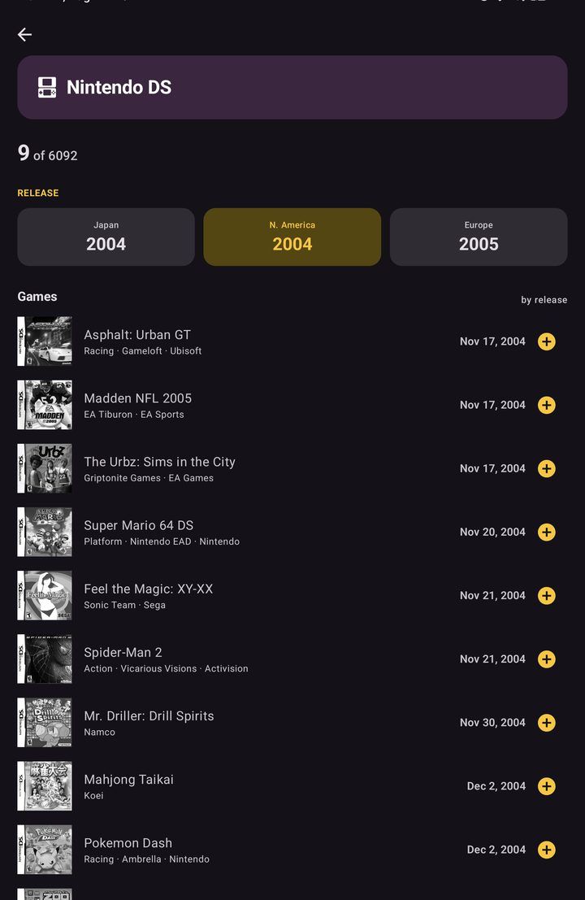
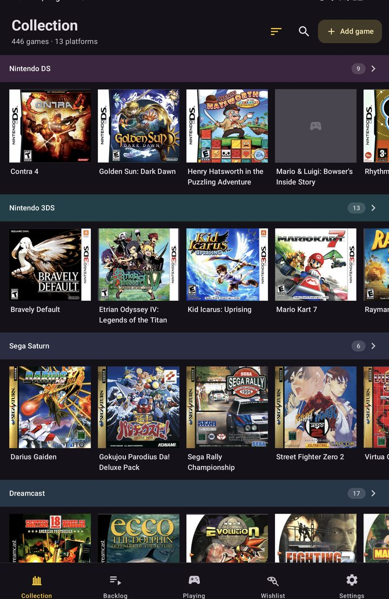
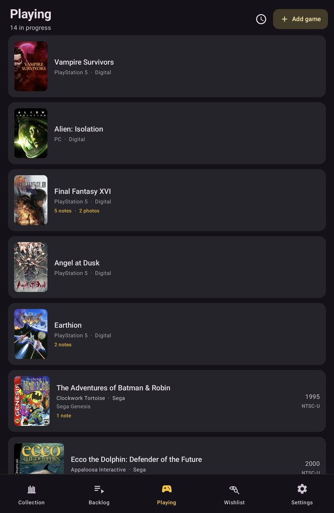

Your retro game collection, and a diary for every game.



fullset keeps track of the games you own — shelf by shelf, console by console — and gives each one a place to write down what playing it was like. Everything stays on your phone.
Your collection grouped by console, with real box art and how complete each copy is — loose, boxed, or complete in box.
Dated notes, photos and voice memos. Voice is transcribed on the device itself.
Bundled with the app. Searching for a title works with no connection at all.
The same game is a different product in each market — its own title, date and catalog number.
Each one ships with separate lists for North America, Japan and Europe, so your Japanese import shows the box, the release date and the catalog number that match the copy on your shelf.
If you don't want to track a collection, the first screen lets you say so and the shelves stay out of your way.
You can change your mind later — nothing is deleted either way.
Free and open source under the MIT license.
Android today; an iOS version is in progress.